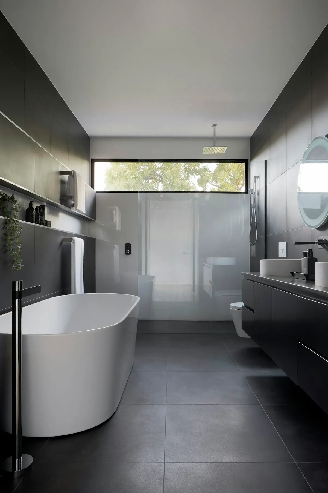

Ringkasan Inti
- Skylight membantu memasukkan pencahayaan alami ke area tengah rumah yang sulit dijangkau oleh jendela samping konvensional.
- Jendela panel kaca besar memaksimalkan penerangan ruangan sekaligus memperkuat koneksi visual dengan lanskap perbukitan Kota Batu.
- Void atau bukaan vertikal menjadi solusi pencahayaan sekaligus sirkulasi termal untuk rumah berdenah memanjang di lahan miring.
- Pemilihan jenis kaca berinsulasi (Low-E / Double Glass) memastikan ruangan terang benderang tanpa membuat suhu dalam ruangan menjadi dingin membekukan.
Daftar Isi Artikel
- 1. Apa Jenis Bukaan Cahaya Alami yang Cocok untuk Rumah Sejuk?
- 2. Bagaimana Cara Menerapkan Skylight pada Rumah Minimalis?
- 3. Apa Manfaat Bukaan Cahaya Alami bagi Kenyamanan Penghuni?
- 4. Bagaimana Menyesuaikan Bukaan Cahaya dengan Suhu Sejuk Kota Batu?
- 5. FAQ (Pertanyaan Sering Diajukan)
- 6. Kesimpulan Praktis
Dalam penerapan desain rumah tanah miring Malang dan dataran tinggi Kota Batu, pencahayaan alami menjadi elemen vital untuk menghadirkan kehangatan, mengusir kelembapan udara pegunungan, serta mereduksi konsumsi daya listrik sepanjang siang hari.
1. Apa Jenis Bukaan Cahaya Alami yang Cocok untuk Rumah Sejuk?
Mendesain bukaan cahaya di kawasan sejuk seperti Kota Batu menuntut keahlian khusus dalam menyeimbangkan limpahan sinar matahari dengan perlindungan termal agar hawa dingin malam hari tidak merembes ke seluruh ruangan.
Beberapa jenis bukaan arsitektural yang paling efektif diterapkan meliputi:
- Skylight Kaca Atap (Roof Glazing): Memasukkan cahaya zenit langsung dari atas ke area tangga utama, inner garden, atau koridor tengah rumah.
- Jendela Panel Kaca Mati Frameless (Picture Window): Membingkai pemandangan Gunung Panderman dan bukit pinus Batu sekaligus bertindak sebagai solar collector alami.
- Clerestory Window (Jendela Pita Atas): Diposisikan di puncak dinding di bawah langit-langit untuk menyebarkan cahaya difus tanpa mengorbankan privasi penghuni.
- Glass Block & Jalusi Kaca Frosted: Pilihan ideal untuk area servis basah dan kamar mandi yang membutuhkan pencahayaan steril bebas jamur.

2. Bagaimana Cara Menerapkan Skylight pada Rumah Minimalis?
Pemasangan skylight pada iklim pegunungan memerlukan perencanaan sudut kemiringan dan sistem pelapis anti-bocor yang sangat teliti:
Panduan Teknis Eksekusi Skylight:
- Gunakan Kaca Tempered + Laminated Minimal 10-12 mm: Memberikan keamanan ganda dari benturan ranting pohon atau hujan es lokal tanpa risiko serpihan jatuh.
- Kemiringan Sudut Minimal 15°: Menjamin air hujan deras dan guguran daun pinus langsung mengalir bersih ke talang tanpa mengendap di permukaan kaca.
- Flashing & Sealant Polyurethane Berkualitas: Sambungan bingkai aluminium dengan dak beton wajib dilapisi membran elastis tahan cuaca.
- Penambahan Manual / Motorized Roller Blind: Mengatur intensitas cahaya matahari saat terik siang hari di musim kemarau.
Catatan Arsitek Malang
Untuk rumah di Batu dan lereng Dau, hadapkan bukaan skylight dan jendela utama ke arah Timur laut. Anda akan mendapatkan limpahan sinar ultraviolet pagi yang sehat dan menghangatkan ruangan, serta terlindung dari terpaan angin badai barat.
3. Apa Manfaat Bukaan Cahaya Alami bagi Kenyamanan Penghuni?
Mengintegrasikan cahaya matahari ke dalam tata ruang arsitektur memberikan serangkaian dampak positif yang signifikan:
- Mencegah Kelembapan & Pertumbuhan Jamur: Sinar matahari alami menjaga dinding interior tetap kering di tengah tingkat kelembapan udara Batu yang mencapai 80-90%.
- Efisiensi Biaya Operasional Listrik: Mengeliminasi kebutuhan lampu penerangan ruangan sejak pukul 06.00 hingga 17.30 WIB.
- Efek Visual Ruang Lebih Luas (Spacious): Permainan bayangan dan gradasi sinar alami menciptakan kedalaman visual pada rumah minimalis berlahan kompak.
- Kesehatan & Ritme Sirkadian: Paparan spektrum sinar matahari alami meningkatkan mood positif dan kualitas tidur seluruh anggota keluarga.
4. Bagaimana Menyesuaikan Bukaan Cahaya dengan Suhu Sejuk Kota Batu?
Tantangan utama rumah berkaca luas di daerah dingin adalah fenomena kehilangan panas (heat loss) di malam hari. Kami mengatasinya melalui strategi pasif thermal:
Menggunakan kaca Low-Emissivity (Low-E) atau sistem Double Glazing berisi gas argon dapat mereduksi konduksi suhu dingin dari luar hingga 60%. Selain itu, penempatan material penyimpan panas seperti dinding bata ekspos dan lantai batu alam di dekat bukaan jendela akan menyerap panas matahari siang dan melepaskannya perlahan ke ruangan saat malam hari tiba.
5. FAQ (Pertanyaan Sering Diajukan)
Apakah skylight berisiko bocor saat musim hujan deras di Batu?
Dengan sistem talang keliling, sudut kemiringan minimal 15°, dan aplikasi waterproofing membran bakar berstandar arsitek, risiko kebocoran dapat dicegah sepenuhnya.
Apakah jendela panel kaca besar membuat interior rumah terasa dingin?
Tidak, asalkan menggunakan kusen aluminium thermal-break dan kaca double glazing insulatif yang dirancang khusus untuk mempertahankan kehangatan udara ruang dalam.
Berapa biaya tambahan untuk memasang skylight pada dak atap rumah?
Biaya bervariasi bergantung pada dimensi bukaan, spesifikasi kaca tempered laminated, dan struktur pengaku rangka besi WF/hollow yang digunakan.
6. Kesimpulan Praktis
Penerapan bukaan cahaya alami yang terkonsep pada rumah minimalis di Kota Batu memberikan harmoni antara keindahan estetika modern, kenyamanan termal, dan efisiensi energi berkelanjutan. Diskusikan rencana bukaan pencahayaan dan desain villa modern di Batu bersama tim Arsitek Malang untuk hasil bangunan yang presisi dan nyaman dihuni sepanjang masa.
Wujudkan Rumah Sejuk dengan Pencahayaan Optimal
Rencanakan denah tata ruang, skylight estetik, dan ventilasi silang rumah Anda di Kota Batu bersama arsitek berlisensi IAI.

Muhammad Musyaffa
Penulis & Tim Riset Arsitektur Maroon Arsitek Malang, spesialis arsitektur bioklimatik dataran tinggi, orientasi pencahayaan pasif, dan desain villa tropis.